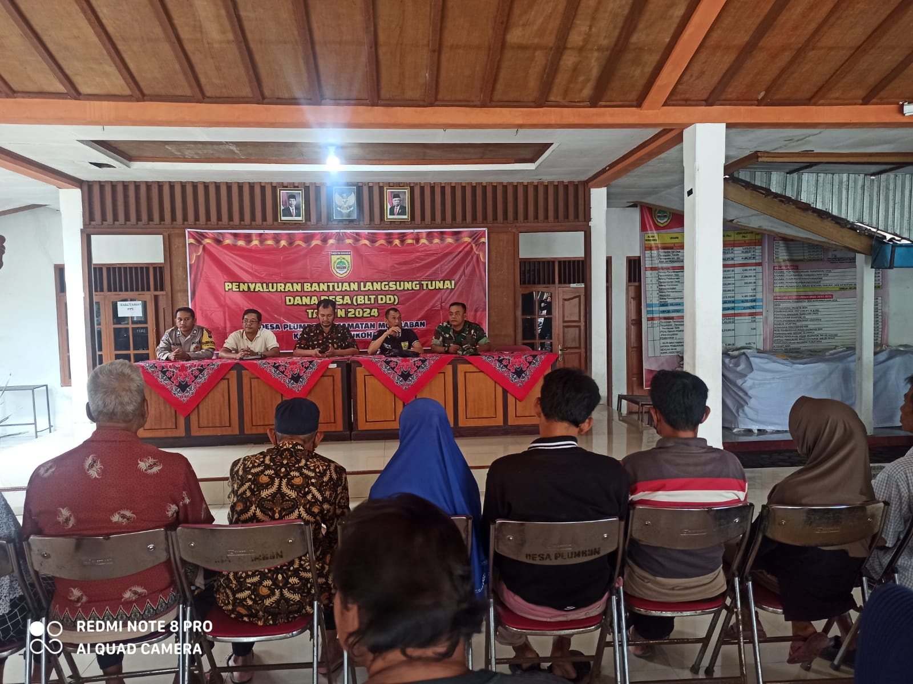
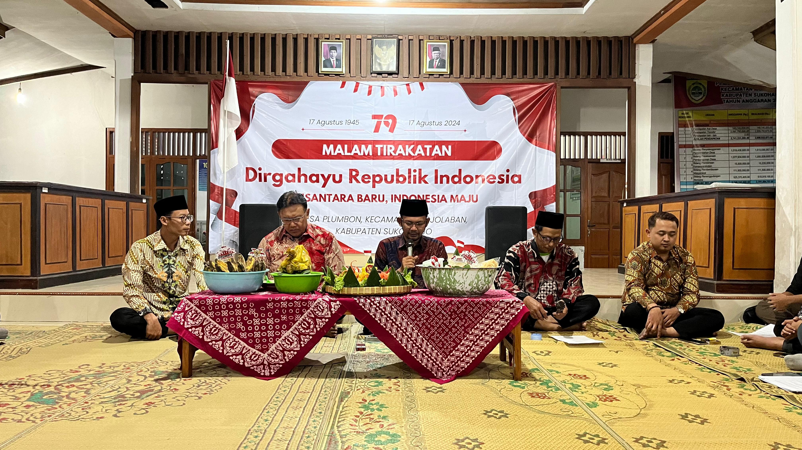
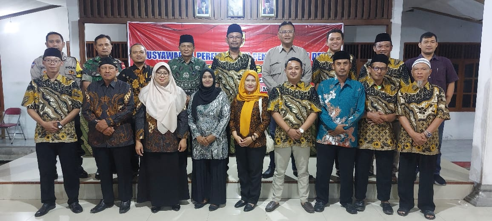
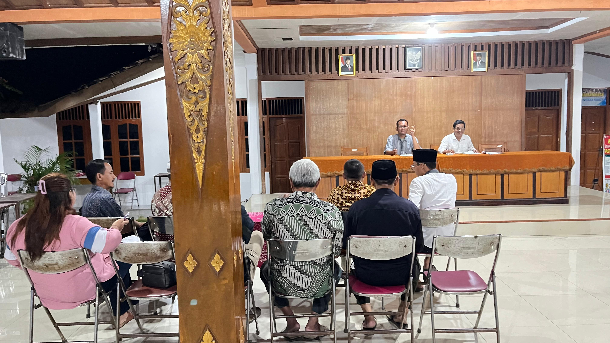
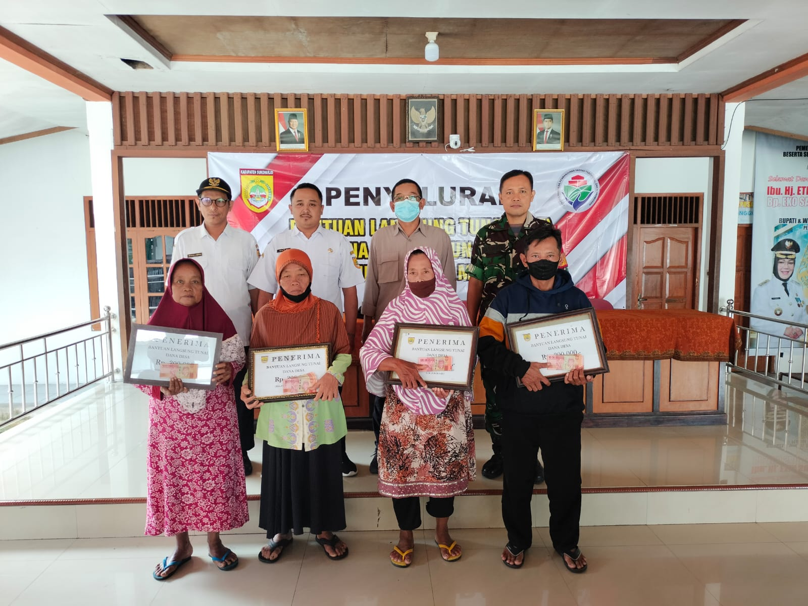

MALAM TIRAKATAN PERINGATAN HARI LAHIR KABUPATEN SUKOHARJO KE 80
Kegiatan malam tirakatan dalam rangka memperingati Hari Lahir Kabupaten Sukoharjo ke-80 diselenggarakan khidmat di Pendopo Balai Desa Plumbon.
Sugeng Rawuh Wonten Website Resmi
Maju, Aman, Konstitusional, Mantap, Unggul, & Rapi

Website ini bertujuan untuk memberikan informasi yang berkaitan untuk mengangkat potensi usaha bisnis yang dimiliki Desa Plumbon, mengangkat potensi tempat wisata, mengangkat kegiatan event kebudayaan dan hal yang berkaitan dengan Desa Plumbon Kecamatan Mojolaban Kabupaten Sukoharjo.
Melalui website terpadu ini, masyarakat dapat mengakses berita terkini, transparansi anggaran, agenda kegiatan desa, serta layanan administrasi kependudukan secara mudah dan cepat.
Selengkapnya





Belum ada video.
Kegiatan malam tirakatan dalam rangka memperingati Hari Lahir Kabupaten Sukoharjo ke-80 diselenggarakan khidmat di Pendopo Balai Desa Plumbon.

Musyawarah Perencanaan Pembangunan Desa Plumbon Tahun Anggaran 2025 dihadiri ketua RT/RW, PKK, Karang Taruna, BPD, dan tim Kecamatan Mojolaban.
| No | Kegiatan | Pelaksanaan | Keterangan |
|---|---|---|---|
| 1 | Musrenbangdes TA 2025 Jam : 09:00 WIB |
17 September 2024 Pendopo Balai Desa Plumbon |
TERLAKSANA |
| 2 | Penyaluran BLT DD Tahap I Jam : 08:30 WIB |
15 Maret 2024 Pendopo Balai Desa Plumbon |
TERLAKSANA |
Akses website resmi Desa Palur untuk informasi layanan, profil, dan berita terkini.
Kunjungi Desa Palur ↗Akses website resmi Desa Gadingan untuk profil industri, UMKM, dan layanan desa.
Kunjungi Desa Gadingan ↗Kembali ke landing page terpadu Pemerintah Kecamatan Mojolaban, Sukoharjo.
← Kembali ke Portal Kecamatan